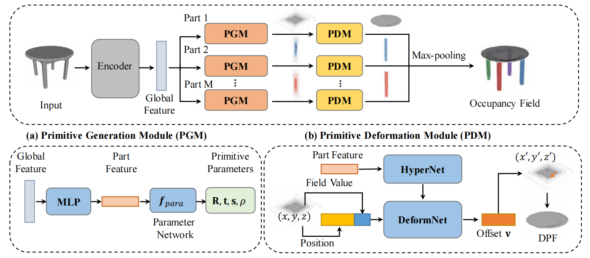
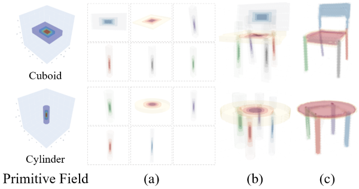
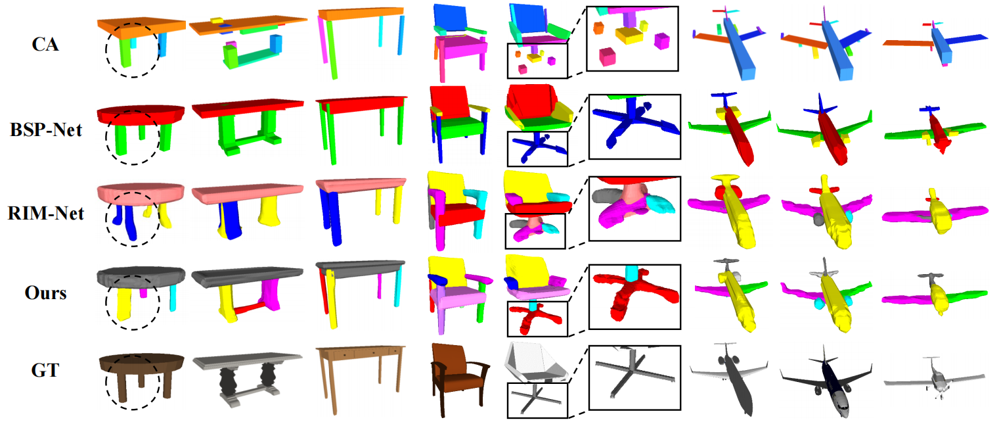
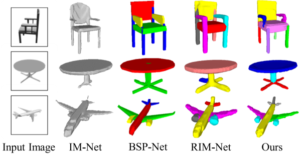
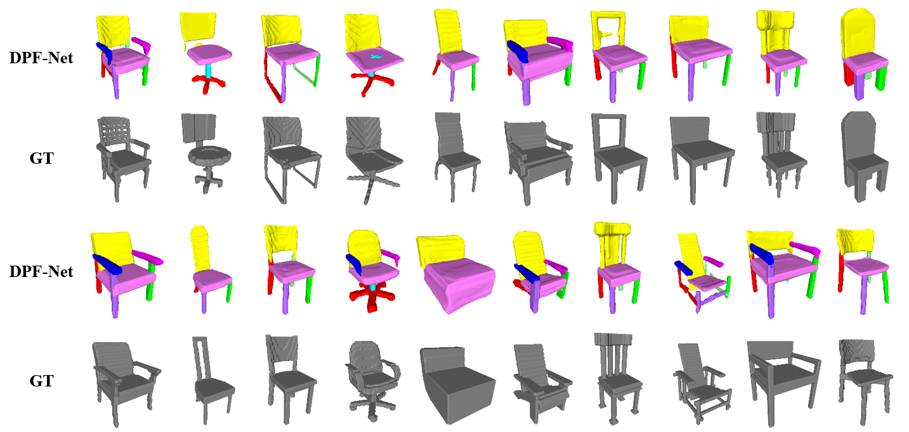
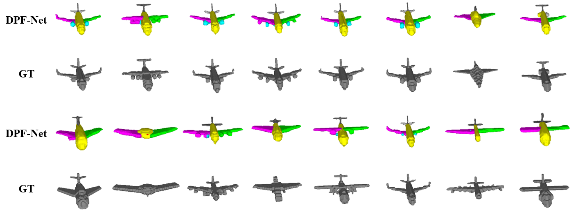
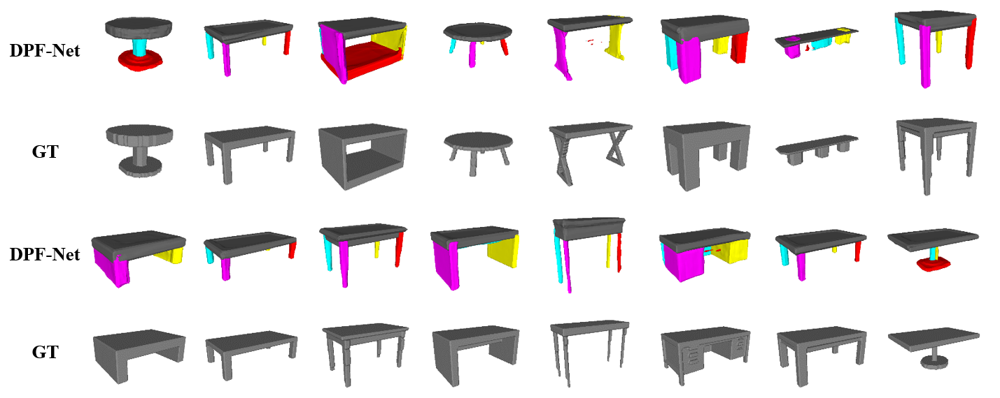

DPF-Net: Combining Explicit Shape Priors in Deformable Primitive Field for Unsupervised Structural Reconstruction of 3D Objects
ICCV 2023
-
Qingyao Shuai
-
Chi Zhang
-
Kaizhi Yang
-
Xuejin Chen
-
University of Science and Technology of China


Abstract
Unsupervised methods for reconstructing structures face significant challenges in capturing the geometric details with consistent structures among diverse shapes of the same category. To address this issue, we present a novel unsupervised structural reconstruction method, named DPF-Net, based on a new Deformable Primitive Field (DPF) representation, which allows for high-quality shape reconstruction using parameterized geometric primitives. We design a two-stage shape reconstruction pipeline which consists of a primitive generation module and a primitive deformation module to approximate the target shape of each part progressively. The primitive generation module estimates the explicit orientation, position, and size parameters of parameterized geometric primitives, while the primitive deformation module predicts a dense deformation field based on a parameterized primitive field to recover shape details. The strong shape prior encoded in parameterized geometric primitives enables our DPF-Net to extract high-level structures and recover fine-grained shape details consistently. The experimental results on three categories of objects in diverse shapes demonstrate the effectiveness and generalization ability of our DPF-Net on structural reconstruction and shape segmentation.
Overview

Overview of our DPF-Net for unsupervised structural reconstruction. Our DPF-Net mainly consists of two modules: (a) primitive generation module (PGM) and (b) primitive deformation module (PDM). We first project the extracted global feature of the input into a set of part features and generate a parameterized primitive for each part in the primitive generation module. Then for each part, the primitive deformation module predicts point-wise deformation and constructs a deformed primitive field (DPF) to better approximate shape details. Finally, we compose these DPFs to construct an occupancy field, from which the surface mesh can be extracted by k-isosurfacing.
Deformed Primitive Field

Illustration of our proposed deformable primitive fields. (a) Each object part is represented by a parameterized primitive field of a cuboid primitive (top) or a cylinder primitive (bottom) with different parameters. (b) The parameterized primitive is further deformed via a deformation field to better approximate the shape details of each part. (c) An occupancy field is obtained for the entire object by assembling the deformed primitive fields of all the parts.
Qualitative Results
Comparing with primitive-based method CA and implicit field based method RIM-Net, DPF-Net generates high-quality 3D reconstruction with smooth surface meshes and consistent part structures.
Single View Reconstrution Results
DPF-Net achieves closer 3D reconstuction to the input image with better part partition comparing with previous reconstruction method and structural reconstruction methods.
More Results - Chair

More Results - Airplane

More Results - Table

Citation
@inproceedings{shuai2023dpfnet,
title={DPF-Net: Combining Explicit Shape Priors in Deformable Primitive Field for Unsupervised Structural Reconstruction of 3D Objects},
author={Qingyao, Shuai and Chi, Zhang and Kaizhi, Yang and Xuejin, Chen},
booktitle={IEEE/CVF Conference on International Conference on Computer Vision (ICCV)},
year={2023}
}